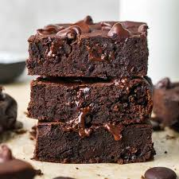

BROWNIE

DESCRIPTION
A chocolate brownie, or simply a brownie, is a chocolate baked confection. Brownies come in a variety of forms and may be either fudgy or cakey, depending on their density. Brownies often, but not always, have a glossy "skin" on their upper crust.
INGREDIENTS
Cookie Layer
- 1/2 cup butter, softened
- 1/2 cup light brown sugar
- 1/4 cup white sugar
- 1/2 teaspoon vanilla extract
- 1 large egg
- 1 1/4 cups all-purpose flour
- 1/2 teaspoon salt
- 1/2 teaspoon baking soda
- 1 cup semisweet chocolate chips
Brownie Layer
- 1 cup white sugar
- 1/2 cup butter, melted
- 1 teaspoon vanilla extract
- 2 eggs
- 1/3 cup cocoa powder
- 1/2 cup all-purpose flour
- 1/4 teaspoon baking powder
- 1/8 teaspoon salt
STEPS
- Gather all ingredients.
- Preheat the oven to 350 degrees F (175 degrees C). Grease a 9x13-inch baking dish.
- Prepare cookie layer: Beat 1/2 cup butter, 1/2 cup brown sugar, 1/4 cup white sugar, and 1/2 teaspoon vanilla in a large bowl until creamy. Add one egg; beat until light and creamy, about 2 minutes.
- Whisk 1 1/4 cups flour, 1/2 teaspoon salt, and baking soda in a bowl. Gradually stir flour mixture into butter mixture until dough is combined. Stir chocolate chips into dough. Spread dough evenly into the prepared baking dish; set aside.
- Prepare brownie layer: Stir 1 cup sugar, 1/2 cup melted butter, and 1 teaspoon vanilla in a bowl; add two eggs and beat well. Mix in cocoa powder until well-combined. Stir in 1/2 cup flour, baking powder, and 1/8 teaspoon salt until batter is combined. Pour over cookie layer and spread to cover completely.
- Bake in the preheated oven until a toothpick inserted into the center comes out clean, 20 to 25 minutes. Cool completely before cutting into 20 bars. Enjoy!